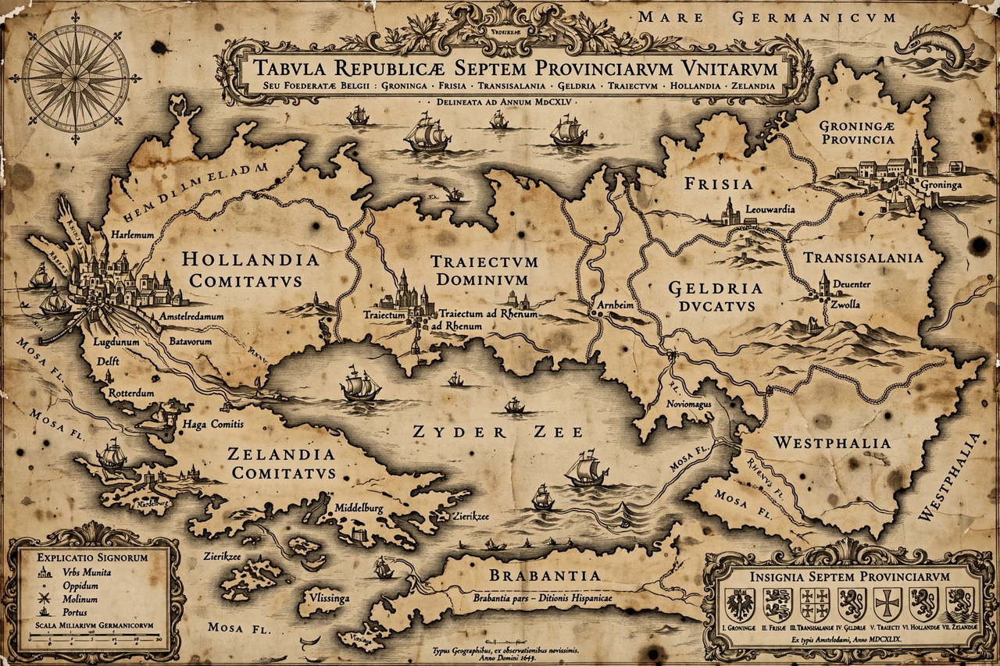

Dutch Republic

| Republic of the Seven United Netherlands | |
|---|---|
| Capital | None (de facto The Hague) |
| Common languages | Dutch |
| Religion | Dutch Reformed (official), Catholicism, Judaism |
| Government | Confederal republic |
| Established | 26 July 1581 (Act of Abjuration) |
| Disestablished | 19 January 1795 (Batavian Revolution) |
| Currency | Guilder |
The Dutch Republic, officially the Republic of the Seven United Netherlands (Dutch: Republiek der Zeven Verenigde Nederlanden), was a confederation of seven provinces in Northern Europe that existed from 1581 to 1795. It emerged during the Eighty Years' War, when the northern provinces of the Habsburg Netherlands revolted against Philip II of Spain and declared independence with the Act of Abjuration of 1581.
The republic became a great power during the 17th-century Dutch Golden Age, dominating global trade, finance, science, and art far beyond its small size. Its merchant fleet, the Dutch East India Company (VOC, founded 1602) and the Dutch West India Company (WIC, founded 1621) made it the world's leading commercial empire. Amsterdam became the centre of world finance, and the republic produced figures such as Rembrandt, Vermeer, Spinoza, and Huygens.
History
The Union of Utrecht (1579) bound the northern provinces together, and in 1581 they abjured their allegiance to the Spanish king. After the assassination of William the Silent in 1584, leadership passed to Maurice of Nassau and Johan van Oldenbarnevelt. Spanish recognition came first with the Twelve Years' Truce (1609) and finally with the Peace of Münster in 1648, part of the Peace of Westphalia.
The republic was governed by the States General and the stadtholders of the House of Orange-Nassau, an arrangement that produced recurring tension between republican regents and Orangists, including two stadtholderless periods (1650–1672 and 1702–1747). In the Rampjaar (Disaster Year) of 1672 the republic was invaded by France, England, and German allies but survived under William III.
After 1713 the republic's power gradually declined relative to Britain and France. In 1795, French revolutionary forces and Dutch patriots proclaimed the Batavian Republic, ending the old confederation.
Government
Sovereignty rested with the seven provinces — Holland, Zeeland, Utrecht, Gelderland, Overijssel, Friesland, and Groningen — each with one vote in the States General. Holland, contributing nearly 60 percent of the budget, was dominant. The office of stadtholder, usually held by the Prince of Orange in most provinces, combined military command with great political influence.
Economy
The republic's prosperity rested on shipping, the herring fishery, textile and shipbuilding industries, tulip and commodity markets, and the Bank of Amsterdam (1609). By the mid-17th century Dutch ships carried more tonnage than those of England, France, Spain, Portugal, and the Holy Roman Empire combined.